РАЗРАБОТКА КОНФИГУРАЦИИ ДЛЯ УЧЕТА ПРОДАЖ ТОВАРОВ
С СОПУТСТВУЮЩИМИ УСЛУГАМИ ПОКУПАТЕЛЯМ
Сложность: **
Теги: справочник, документ, функциональная опция, схема компоновки данных
ЗАДАНИЕ
Заказчик просит разработать конфигурацию для учета продаж товаров с сопутствующими услугами покупателям. Необходимо предусмотреть опциональную возможность использования различных валют.
При многовалютном учете пользователь системы при оформлении продажи должен обязательно указать валюту. Итоговая стоимость заказа должна формироваться автоматически.
Следует построить Отчет по продажам с возможностью выбора нужной валюты.
Форма отчета:
|
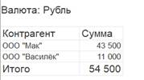 |
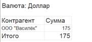 |
Отчет выводит информацию по выбранной валюте, а также подводит общий итог.
Подготовка
q Создать новую информационную базу.
q Открыть информационную базу в режиме «Конфигуратор».
q Открыть окно конфигурации.
Подробнее о том, как это сделать, смотрите в Лабораторной работе № 2 (стр. 17).
Выполнение
Из условия следует, что необходимо хранить информацию о покупателях, товарах и услугах, а также валютах. Для решения этой задачи нам понадобятся справочники.
Определение
Справочник – это объект конфигурации, который хранит справочную информацию,
например, перечень товаров или список сотрудников (более подробно про
справочники можно прочитать здесь: https://v8.1c.ru/platforma/spravochniki/).
Создадим справочник «Номенклатура».

Перейдем на вкладку «Данные» и добавим реквизит «ЭтоУслуга», тип – «Булево». Данный реквизит необходим для того, чтобы отличать товары от услуг в справочнике.

Создадим справочник «Контрагенты».
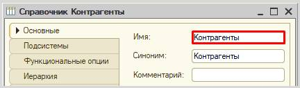
Создадим справочник «Валюты».
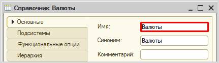
Обязательной валютой в данной информационной системе является рубль. Создадим предопределенный элемент.
Определение
Предопределенные элементы – это такие элементы, которые создает разработчик в конфигураторе для удобства работы пользователя.
Созданный таким образом элемент будет доступен пользователю с первого запуска программы. Для создания такого элемента перейдем на вкладку «Прочее» и откроем список предопределенных элементов справочника.
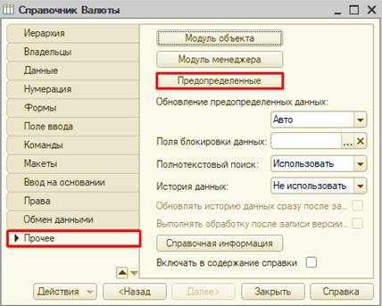
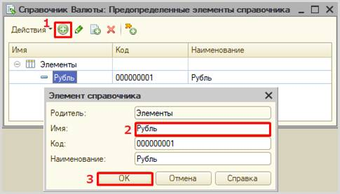
Откроем программу в режиме «1С:Предприятие» и добавим в каждый справочник несколько элементов.
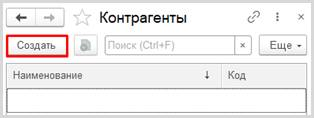
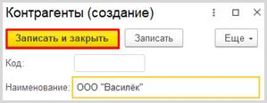
Обратите внимание, что поля «Код» и «Наименование» система сгенерировала самостоятельно при добавлении нового справочника. Эти поля являются стандартными реквизитами. Стандартные реквизиты платформа создает автоматически, исходя из свойств конкретного объекта конфигурации. Поле «Код» заполнять не нужно, система сделает это автоматически. Поле «Наименование» является обязательным для заполнения.
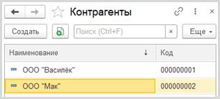
Аналогично добавим элементы в справочники «Номенклатура» и «Валюты».
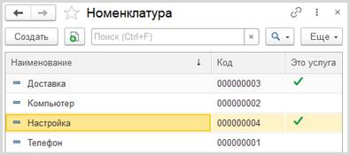
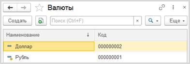
Заметим, что предопределенные элементы в справочнике отмечены желтым маркером.
«Заказчик просит разработать конфигурацию для учета продаж товаров с сопутствующими услугами покупателям».
Для регистрации продаж следует воспользоваться объектом конфигурации документ.
Определение
Документ – это объект конфигурации, хранящий информацию о каких-либо событиях, произошедших в «жизни» предприятия. Например, с помощью документа можно зарегистрировать (то есть сохранить данные документа для последующей обработки) продажу товаров или начисление зарплаты (подробнее про документы можно прочитать здесь: https://v8.1c.ru/platforma/dokumenty/).
Добавим новый документ «Продажи».
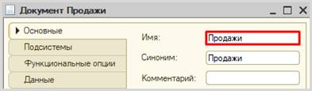
Для настройки структуры документа переходим на вкладку «Данные»
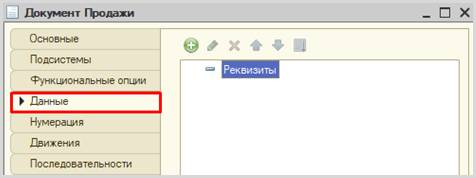
«При многовалютном учете пользователь системы при оформлении продажи должен обязательно указать валюту. Итоговая стоимость заказа должна формироваться автоматически».
Из условия следует, что при продаже обязательно нужно указывать покупателя и валюту. Также будем хранить и итоговую стоимость.
Добавим реквизит «Покупатель», тип – «СправочникСсылка.Контрагенты».
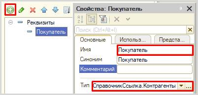
Далее добавим реквизит «Валюта».
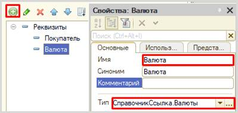
Пользователь может не использовать возможность ведения учета в различных валютах. В этом случае поле «Валюта» у него будет отсутствовать (этот функционал мы реализуем далее), но системе необходимо понимать, к чему привязана итоговая стоимость: к рублям или, например, долларам.
Поэтому установим значения заполнения по умолчанию на вкладке «Представление».
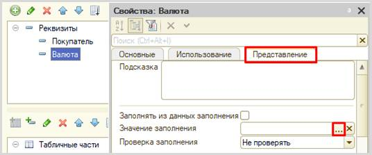

Таким образом, у пользователя по умолчанию будет указана валюта «Рубль», причем пользователь об этом может даже и не знать.
Последним реквизитом в шапку документа добавим «ВсегоКОплате».
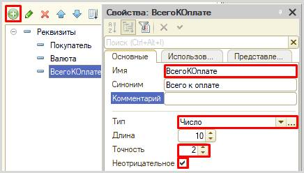
Чтобы регистрировать продажу товаров и услуг в одном документе, необходимо добавить две табличные части.
Сначала добавим табличную часть «СписокТоваров».
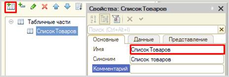
Добавим реквизит табличной части (колонку) «Товар».

Поскольку мы ссылаемся на общий справочник номенклатура, то нам нужно на вкладке «Представление» настроить отбор только по тем элементам, у которых значение реквизита «ЭтоУслуга» установлено в положение «Ложь». Таким образом, пользователь будет в списке выбора видеть только товары.
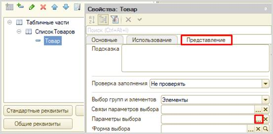
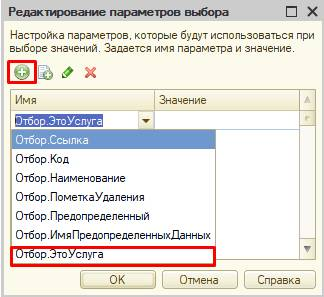
Поскольку в справочнике «Номенклатура» мы указывали для этого реквизита тип «Булево», то в значении параметра нужно указать именно его.
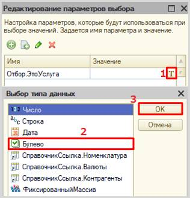
Для товаров значение «ЭтоУслуга» будет установлено в положении «Ложь».
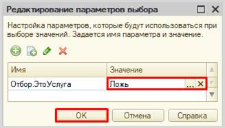
Далее добавим реквизит табличной части «Сумма».
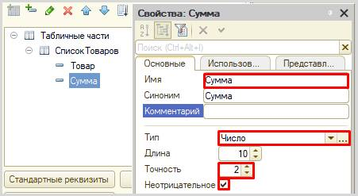
Табличная часть «СписокУслуг» структурно будет совпадать с уже созданной табличной частью «СписокТоваров». Для увеличения скорости разработки скопируем существующую табличную часть и несколько изменим ее.
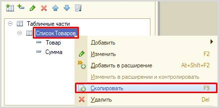
Во-первых, изменим свойство «Имя» у скопированной табличной части. Назовите табличную часть «СписокУслуг».
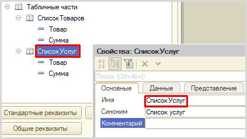
Во-вторых, изменим свойство «Имя» у реквизита табличной части «Товар». Поскольку данная табличная часть будет хранить перечень услуг, то и реквизиту нужно дать имя «Услуга».
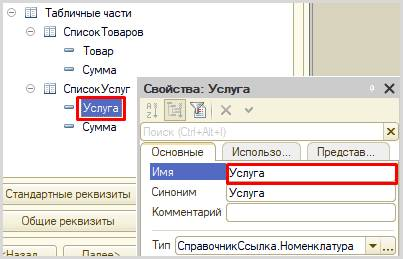
В-третьих, на вкладке «Представление» изменим параметры выбора: для услуг значение типа «Булево» будет в положении «Истина».
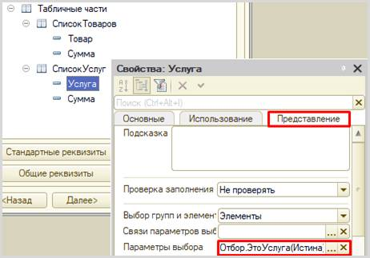
Чтобы итоговая стоимость формировалась автоматически, нужно описать событие в модуле объекта документа «Продажи».
Для этого перейдем на вкладку «Прочее» и откроем «Модуль объекта».
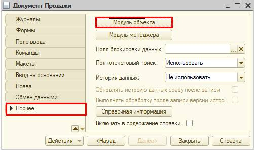
Перед нами откроется модуль объекта, в котором нужно определить событие, при наступлении которого будет происходить описываемый алгоритм. Нам понадобится системное событие, вызовем его через главное меню «Текст» à «Процедуры и функции».
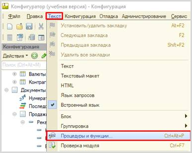
В открывшемся окне выберем «ПередЗаписью».
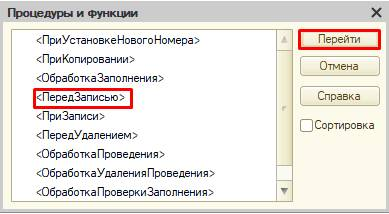
В модуле объекта сформируется обработчик события.
Далее нам нужно описать подсчет итоговой суммы как итог по товарам и услугам.
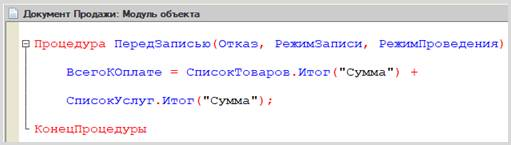
ВсегоКОплате = СписокТоваров.Итог("Сумма") + СписокУслуг.Итог("Сумма");
Запустим режим «1С:Предприятие» и создадим несколько документов.
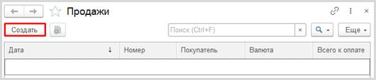
Заполним поля шапки документа, проигнорировав поле «Всего к оплате» (оно заполнится автоматически при записи).
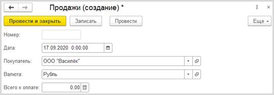
Обратим внимание, что поле «Валюта» заполнено по умолчанию.
Затем заполним таблицы «Список товаров» и «Список услуг».
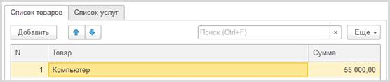
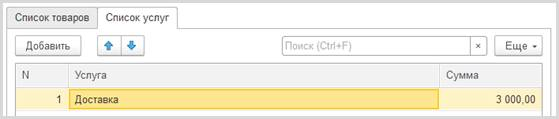
Внимание!
В список товаров можно добавлять только товары, а в список услуг – только услуги.
В момент записи или проведения документа поле «Всего к оплате» заполнится автоматически.
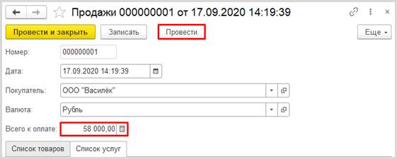
Создайте еще несколько документов на разных покупателей и разные валюты.
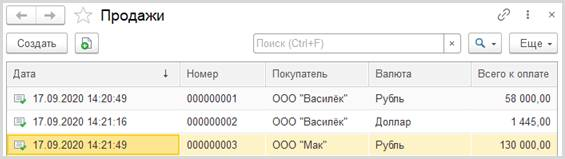
Сейчас мы по умолчанию установили валюту «Рубль», оставив пользователю возможность выбора другой валюты. Но возможность использовать разные валюты нам нужно сделать опциональной. Для этого воспользуемся общим механизмом функциональные опции. Более подробно про функциональные опции можно прочитать здесь: https://v8.1c.ru/platforma/funktsionalnaya-opciya/.
У пользователя должен быть физический способ включения и отключения многовалютного учета. Реализуем это с помощью обычной константы с типом «Булево».
Добавим константу «ВестиМноговалютныйУчет».
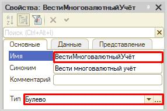
Теперь приступим к созданию и настройке функциональной опции.
В ветке «Общие» дерева конфигурации найдем раздел «Функциональные опции» и добавим опцию с именем «ВестиМноговалютныйУчет».

Теперь перейдем к ее настройке.
Первым делом нужно определить, где она будет храниться. Укажем в качестве места хранения заранее заготовленную константу с аналогичным именем.
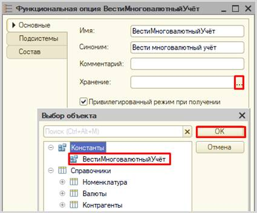
Затем нужно выбрать, на что будет влиять наша функциональная опция. Она должна «включать» и «выключать» поле «Валюта» в документе «Продажи».
Укажем необходимый реквизит документа на вкладке «Состав».
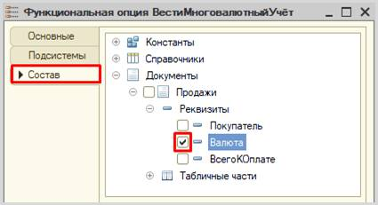
Запустим режим «1С:Предприятие» и проверим работоспособность.
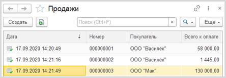
Открыв список документов, мы обнаружим, что отсутствует колонка «Валюта». Это связано с тем, что значение типа «Булево» по умолчанию – «Ложь». Чтобы вновь иметь возможность выбирать валюту, необходимо у константы перевести значение в положение «Истина» и перезапустить режим «1С:Предприятие».
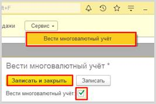
При повторном открытии списка всех документов после проделанных действий мы обнаружим, что колонка «Валюта» снова отображается.
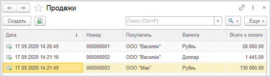
«Следует построить Отчет по продажам с возможностью выбора нужной валюты».
Построим отчет. Для этого воспользуемся соответствующим объектом конфигурации.
Определение
Отчет – это такой объект конфигурации, который формирует данные в понятном для пользователя виде, например, в виде таблицы или диаграммы (подробнее про отчеты можно прочитать здесь: https://v8.1c.ru/platforma/otchet/).
Добавим отчет «Продажи». Для наполнения отчета воспользуемся схемой компоновки данных.
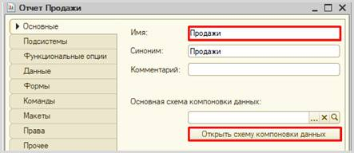
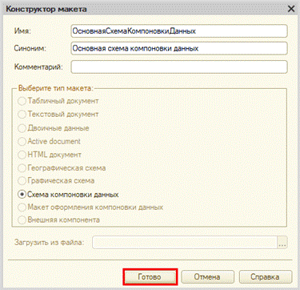
Все созданные нами объекты конфигурации представляют собой таблицы базы данных. В режиме «1С:Предприятие» мы заполняем эти таблицы данными. Чтобы получить эти данные для отображения в отчете, нужно сформировать запрос к базе данных.
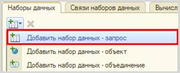
Для формирования запроса воспользуемся конструктором запроса.
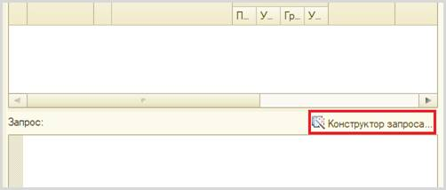
Открывается конструктор запроса. Эта вкладка имеет три части:
q Часть слева отображает все объекты конфигурации, имеющиеся в нашей базе данных. Нужно выбрать лишь те объекты, из которых мы хотим получать данные.
q Посередине находятся таблицы – это выбранные нами объекты, откуда мы хотим получать данные для конкретного отчета.
q Справа поля – это те значения (поля), которые мы хотим увидеть в отчете.
Данные будем брать из регистра накоплений напрямую, чтобы иметь возможность рассчитывать средний балл.
Чтобы перенести данные из одного окна в другое, просто перетащите нужные поля с помощью мыши либо воспользуйтесь стрелочками, расположенными между окнами.
В результате данное окно должно быть заполнено следующим образом:
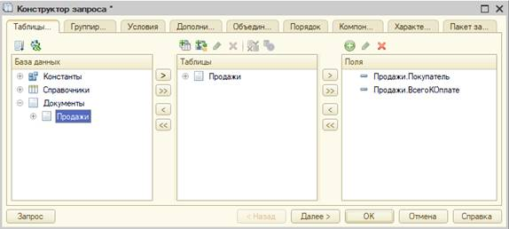
Перейдем на вкладку «Условия».
Наложим условие на реквизит «Проведен», чтобы в отчет попали только совершенные (проведенные) посещения экскурсий.
Наложим условие на поле «Валюта». Это нужно для того, чтобы дать пользователю возможность выбрать интересующую его валюту и построить на ее основании график.
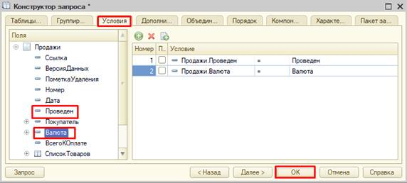
У нас сформируется запрос на встроенном языке запросов 1С. Поскольку пометка проведения имеет только два значения («Истина» и «Ложь»), то нам нужно скорректировать текст нашего запроса.
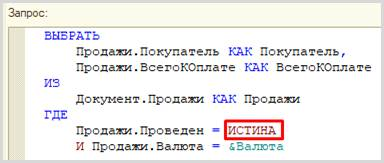
Для красоты зададим синоним полю «ВсегоКОплате». Сделать это можно с помощью конструктора запроса либо прямо в окне запроса.
Чтобы в отчете происходил итоговый подсчет по всем продажам, сделаем поле «Сумма» (синоним поля «ВсегоКОплате») ресурсом на соответствующей вкладке.
Далее нужно включить пользователю возможность выбирать нужную валюту. Для этого перейдем на вкладку «Параметры» и отключим ограничение доступности.
Теперь переходим на вкладку «Настройки» для оформления внешнего вида отчета.
Воспользуемся конструктором настроек отчета.
Построим отчет в виде списка.
Выберем поля, которые будут отображаться в отчете.
Этап
группировки мы пропустим.
Отсортируем наш отчет по алфавитному порядку покупателей.
Заключительным этапом будет настройка параметра для отображения у пользователя.
Сначала установим значение по умолчанию.
Последнее, что осталось – включить параметр в пользовательские настройки.
Отчет готов.
Запустим систему в режиме «1С:Предприятие» и построим его, указав разные валюты.
Поставленная задача решена.